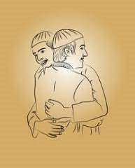

THE Dawah
The Dawah for life
Da’wah or calling others to Islam is the best of deeds, because it involves guiding people to the Straight Path
and to that which will bring them happiness in this world and in the Hereafter.Da’wah page
Ads

For computer repair and ICT inquiries Call Tel:+254714614307 / +254756893822
Brotherhood
 The Relatives
Being the good neighbours
In fact, the Prophet Mohammad said: "Angel Jibril advised me continuously to take care of the neighbor till I thought that Allah is to make him an inheritor.goodness to Neighbors" Before we can sincerely help the needy, fight poverty, and strengthen our bonds in the Muslim community, we have to first understand our duty to our neighbors.
Businessing islamically

The Prophet (S.A.W) cursed the one who accepted usury (lending money with interest), the one who paid it, the wit- ness to it, Businessing islamically and the one who recorded it. The Prophet (S.A.W) was asked which was the best kind of earning, he replied: That for which a man works with his hands. And honest trading.
.
Da'wah
The Dawah for life
Da’wah or calling others to Islam is the best of deeds, because it involves guiding people to the Straight Path
and to that which will bring them happiness in this world and in the Hereafter.Da’wah page
Invite (all) to the Way of your Lord with wisdom and beautiful preaching; and argue with them in ways that are best and most gracious. For your Lord knows best who have strayed from His Path, and who receive guidance" (16:125).
The relatives

The Holy Prophet said “Do not ever sever your relationship with a member of your family even if he severs his relationship with you.” The RelatiesIslam views that keeping relations with family members prolongs one's life and increases one's sustenance